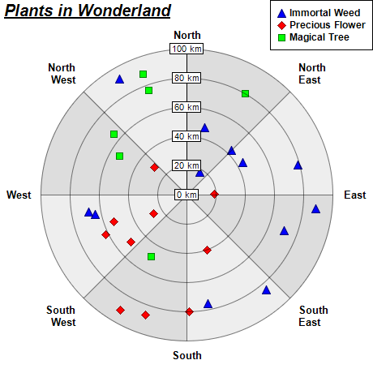

This example demonstrates how to create polar scatter charts. It also demonstrates using alternating background colors along the angular direction.
A polar scatter chart can be created as a polar line chart with data symbols. The line width is set to 0, so only the symbols can be seen. This will create the effects of a scatter chart.
The detail steps are:
Note that in this example, the polar plot area uses two alternating background colors along the angular direction. This is by using
PolarChart.setPlotAreaBg.
The following is the command line version of the code in "cppdemo/polarscatter". The MFC version of the code is in "mfcdemo/mfcdemo". The Qt Widgets version of the code is in "qtdemo/qtdemo". The QML/Qt Quick version of the code is in "qmldemo/qmldemo".
#include "chartdir.h"
int main(int argc, char *argv[])
{
// The data for the chart
double data0[] = {43, 89, 76, 64, 48, 18, 92, 68, 44, 79, 71, 85};
const int data0_size = (int)(sizeof(data0)/sizeof(*data0));
double angles0[] = {45, 96, 169, 258, 15, 30, 330, 260, 60, 75, 110, 140};
const int angles0_size = (int)(sizeof(angles0)/sizeof(*angles0));
double data1[] = {50, 91, 26, 29, 80, 53, 62, 87, 19, 40};
const int data1_size = (int)(sizeof(data1)/sizeof(*data1));
double angles1[] = {230, 210, 240, 310, 179, 250, 244, 199, 89, 160};
const int angles1_size = (int)(sizeof(angles1)/sizeof(*angles1));
double data2[] = {88, 65, 76, 49, 80, 53};
const int data2_size = (int)(sizeof(data2)/sizeof(*data2));
double angles2[] = {340, 310, 340, 210, 30, 300};
const int angles2_size = (int)(sizeof(angles2)/sizeof(*angles2));
// The labels on the angular axis (spokes)
const char* labels[] = {"North", "North\nEast", "East", "South\nEast", "South", "South\nWest",
"West", "North\nWest"};
const int labels_size = (int)(sizeof(labels)/sizeof(*labels));
// Create a PolarChart object of size 460 x 460 pixels
PolarChart* c = new PolarChart(460, 460);
// Add a title to the chart at the top left corner using 15pt Arial Bold Italic font
c->addTitle(Chart::TopLeft, "<*underline=2*>Plants in Wonderland", "Arial Bold Italic", 15);
// Set center of plot area at (230, 240) with radius 180 pixels
c->setPlotArea(230, 240, 180);
// Use alternative light grey/dark grey sector background color
c->setPlotAreaBg(0xdddddd, 0xeeeeee, false);
// Set the grid style to circular grid
c->setGridStyle(false);
// Add a legend box at the top right corner of the chart using 9pt Arial Bold font
c->addLegend(459, 0, true, "Arial Bold", 9)->setAlignment(Chart::TopRight);
// Set angular axis as 0 - 360, either 8 spokes
c->angularAxis()->setLinearScale(0, 360, StringArray(labels, labels_size));
// Set the radial axis label format
c->radialAxis()->setLabelFormat("{value} km");
// Add a blue (0xff) polar line layer to the chart using (data0, angle0)
PolarLineLayer* layer0 = c->addLineLayer(DoubleArray(data0, data0_size), 0x0000ff,
"Immortal Weed");
layer0->setAngles(DoubleArray(angles0, angles0_size));
layer0->setLineWidth(0);
layer0->setDataSymbol(Chart::TriangleSymbol, 11);
// Add a red (0xff0000) polar line layer to the chart using (data1, angles1)
PolarLineLayer* layer1 = c->addLineLayer(DoubleArray(data1, data1_size), 0xff0000,
"Precious Flower");
layer1->setAngles(DoubleArray(angles1, angles1_size));
// Disable the line by setting its width to 0, so only the symbols are visible
layer1->setLineWidth(0);
// Use a 11 pixel diamond data point symbol
layer1->setDataSymbol(Chart::DiamondSymbol, 11);
// Add a green (0x00ff00) polar line layer to the chart using (data2, angles2)
PolarLineLayer* layer2 = c->addLineLayer(DoubleArray(data2, data2_size), 0x00ff00,
"Magical Tree");
layer2->setAngles(DoubleArray(angles2, angles2_size));
// Disable the line by setting its width to 0, so only the symbols are visible
layer2->setLineWidth(0);
// Use a 9 pixel square data point symbol
layer2->setDataSymbol(Chart::SquareSymbol, 9);
// Output the chart
c->makeChart("polarscatter.png");
//free up resources
delete c;
return 0;
}
© 2023 Advanced Software Engineering Limited. All rights reserved.